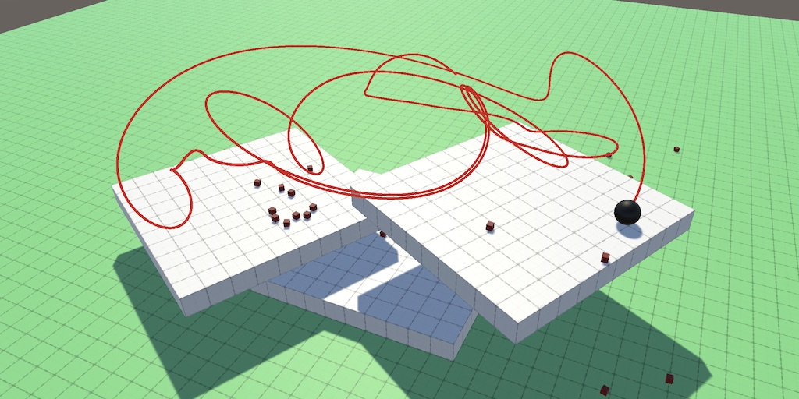
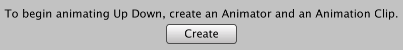
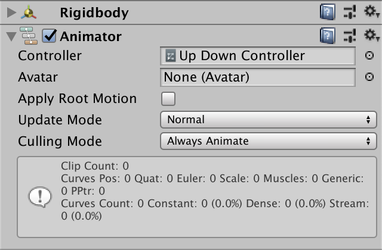
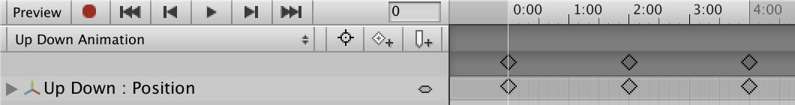
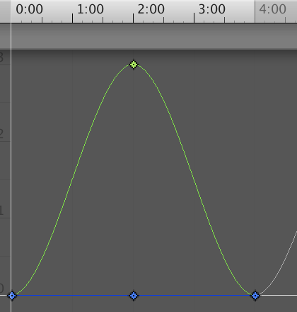
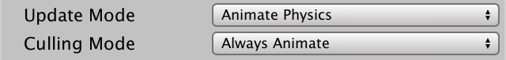
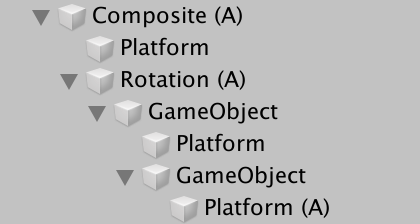

Moving the Ground
Going for a Ride
- Create animating platforms.
- Keep track of a connected body.
- Try to stay relatively still.
- Support an orbiting connection point.
This is the seventh installment of a tutorial series about controlling the movement of a character. It deals with the challenges of standing on and navigating over terrain that is in motion.
This tutorial is made with Unity 2019.2.21f1. It also uses the ProBuilder package.

Animating Geometry
There are multiple ways to make geometry move. We could create a script that adjust an object's transformation. We could use Unity's animation system to animate it instead. We could also program our own playable graph and create an animation that way. Or we could rely on PhysX and let an object move in response to external forces and collisions. In all cases we have to make sure that terrain and obstacles that are in motion play nice with PhysX, our moving sphere, and our orbit camera.
Animation
For this tutorial we'll use Unity's animation system to create simple animations in the editor. We do that via the Animation window, which can be opened via Window / Animation / Animation. If you have an object selected that doesn't have an Animator component yet then the window will display a button that allows you to add that component and immediately create a new animation for it.

I made a simple square platform object named Up Down and then created a new animation clip for it, named Up Down Animation. The animation is a new asset, but pressing the Create button creates another asset as well, which I renamed to Up Down Controller. This is an animation controller asset that's needed to run animations. It can be used to create complex blend trees and animation state machines, but we don't have to deal with that if all we need is a single animation clip. I put both in a new Animation folder.
The Animator component that was added to the platform object is automatically set to use the new controller asset. We can initially leave all its other configuration options at their default values. Also give the object a Rigidbody component, with Is Kinematic enabled, because it's a dynamic PhysX object. While this isn't strictly necessary it makes sure that all interactions work as expected.

To make the animation clip do something you must have the relevant object selected in the scene. The Animation window will display our animation clip on the left, below the timeline control buttons. Press the record button—the red dot—then select a desired moment in the timeline bar on the right. You can zoom to reach areas that are currently not visible. Then adjust the object's transformation, either via its inspector or in the scene view. This will create a keyframe with the new configuration.
For example, I changed the Y position from 0 to 3 at the two-second point and set it back to 0 at four seconds. Then I turned off recording.

At this point it is possible to preview the animation. It will also automatically play and loop after entering play mode.
By default Unity smoothes the animation by easing into and out of transitions. You can control the exact behavior by switching from Dopesheet to Curves mode via the toggle options at the bottom of the Animation window.

Animation Timing
Our sphere can already jump on the platform and move along with it, as it gets pushed upward and falls along with the vertical movement of the platform. But the timing of the interaction isn't correct by default. This is most obvious when setting the Focus Radius of our orbit camera to zero so it rigidly moves with the sphere.
Upward motion turns out to be a little jittery, while downward motion is worse because the sphere repeatedly falls a short distance, hits the platform, then falls again. This happens because by default animations get updated once per frame, so the motion isn't synchronized with PhysX. We can set the animation to update each physics step by setting the Update Mode of the Animator component to Animate Physics.

Now our sphere can stick to the platform while it's moving down. The platform's motion will appear jittery like every other physics object in motion, which can be solved by settings its Rigidbody to interpolate, if necessary.
Sideways Movement
Vertical movement is solved, but we also have to support platforms that move in other directions. So I made another platform with its own animation clip and controller that moves sideways, back and forth along the X axis.
Our sphere can move along the surface of the platform, but it ignores the horizontal movement of the platform while standing on it. Other PhysX objects do get dragged along with the platform, unless it's moving too fast in which case they'll slide and roll around. But our sphere doesn't have any grip so doesn't get dragged along. Its drag coefficient is zero because it would otherwise interfere with our controls. We have to come up with a solution for this problem.
Connected Body
To be able to move along with the surface it's standing on, our sphere first needs to be aware of that surface. In general, this means that at any time the sphere could be connected to another body that's potentially in motion. The first step is to keep track of this body, which we'll refer to as its connected body. There might be multiple such bodies at the same time, but that would be rare so we'll limit ourselves to a single body. Thus if the sphere ends up in contact with multiple we just use an arbitrary body and ignore the others. Once the body is know we have to detect its motion and apply it to the sphere somehow.
Detecting a Connection
We don't care why something is moving, only that it might. The idea is that all dynamic objects have a Rigidbody component, so we'll keep track of the connected body by adding a field for it to MovingSphere.
Rigidbody body, connectedBody;
If we detect a ground contact in EvaluateCollision we can simply assign the rigidbody property of the collision to our field. If the other object has a Rigidbody component then we now have a reference to it, otherwise it's set to null. Note that the component doesn't have to be attached directly to the object we collided with. We could be colliding with a composite object that has the component somewhere higher up in its hierarchy.
if (upDot >= minDot) {
groundContactCount += 1;
contactNormal += normal;
connectedBody = collision.rigidbody;
}
Note that by simply always assigning the connected body we replace any of the previous contacts that counted as ground, so we end up keeping track of the last evaluated ground body. This is fine because the collision order is arbitrary but tends to be temporally stable.
But we might end up on a slope instead of ground. We should also keep track of the body in that case. However, we should prefer the ground over a slope, so only assign a slope body if there isn't already a ground contact.
else if (upDot > -0.01f) {
steepContactCount += 1;
steepNormal += normal;
if (groundContactCount == 0) {
connectedBody = collision.rigidbody;
}
}
We should also keep track of the connected body if we detect the ground in SnapToGround.
bool SnapToGround () {
…
connectedBody = hit.rigidbody;
return true;
}
Finally, reset the connected body to null in ClearState.
void ClearState () {
groundContactCount = steepContactCount = 0;
contactNormal = steepNormal = Vector3.zero;
connectedBody = null;
}
Connection State
Knowing that we're connected to a body during the current physics step is not enough. We have to be able to figure out whether we've remained in contact with the same body since the previous step, as that indicates that we should've moved along with it. So we need another field to store a reference to the previous connected body. It should be set to the current connected body before resetting that one.
Rigidbody body, connectedBody, previousConnectedBody;
…
void ClearState () {
groundContactCount = steepContactCount = 0;
contactNormal = steepNormal = Vector3.zero;
previousConnectedBody = connectedBody;
connectedBody = null;
}
Let's also store the connection velocity in a field. While that's not strictly necessary it's convenient. Set it to zero in ClearState.
Vector3 velocity, desiredVelocity, connectionVelocity;
…
void ClearState () {
groundContactCount = steepContactCount = 0;
contactNormal = steepNormal = connectionVelocity = Vector3.zero;
previousConnectedBody = connectedBody;
connectedBody = null;
}
Determining Motion
If the connected body were a free-moving physics objects then it would have a velocity, but in case of a kinematic animated object its velocity would always be zero. So we'll have to derive the connection velocity ourselves by keeping track of its position. Add a field for that and set it to the connected body's position in a new UpdateConnectionState method, which we'll invoke at the end of UpdateState if we have a connected body.
Vector3 connectionWorldPosition;
…
void UpdateState () {
…
if (connectedBody) {
UpdateConnectionState();
}
}
void UpdateConnectionState () {
connectionWorldPosition = connectedBody.position;
}
But we should take care not to stick to light bodies that we collide with, otherwise we could end up automatically moving along with them as we push them away, effectively launching ourselves. We can avoid that by only updating the connection state if the connected body is kinematic or is at least as massive as the sphere itself.
if (connectedBody) {
if (connectedBody.isKinematic || connectedBody.mass >= body.mass) {
UpdateConnectionState();
}
The movement of the connection can then be found in UpdateConnectionState by subtracting the connection position that we already had from the connection's current position, before we update it. Its velocity is found by dividing its movement by the time delta.
void UpdateConnectionState () {
Vector3 connectionMovement =
connectedBody.position - connectionWorldPosition;
connectionVelocity = connectionMovement / Time.deltaTime;
connectionWorldPosition = connectedBody.position;
}
But that calculation only makes sense if the current and previous connection bodies are the same, so check for that. Otherwise the connection velocity should remain zero.
if (connectedBody == previousConnectedBody) {
Vector3 connectionMovement =
connectedBody.position - connectionWorldPosition;
connectionVelocity = connectionMovement / Time.deltaTime;
}
connectionWorldPosition = connectedBody.position;
Movement Relative to Connection
At this point we know the velocity of whatever we're standing on. The next question is how we incorporate it into the sphere's movement. In reality, when you step from something that's moving onto something that's stationary—or vice versa—you'll have to compensate for the sudden change of relative motion. This takes effort and can be difficult if the change is large. If it's too large you'd end up falling. Also, if you're standing on something that accelerates you have to brace yourself otherwise you'd fall as well. Finally, it should be possible to move at maximum speed relative to what we're standing on. Note that this could lead to world-space velocities that exceed the configured max speed, like when you run inside a moving train.
The simplest way to model all that is to make the sphere accelerate to match the speed of whatever it's connected to, on top of accelerating toward a desired velocity relative to the connection velocity. We can do this in AdjustVelocity by subtracting the connection velocity from the sphere's velocity, then use this relative velocity to determine the current X and Z velocities. Thus the sphere's velocity adjustment becomes relative to the connection velocity, while everything else remains the same.
Vector3 relativeVelocity = velocity - connectionVelocity; float currentX = Vector3.Dot(relativeVelocity, xAxis); float currentZ = Vector3.Dot(relativeVelocity, zAxis);
Our sphere now tries to match the velocity of whatever it's standing on, but is limited by its own acceleration. The sphere will slide a bit before it matches the platform's movement. And if the platform accelerates quickly the sphere might slide off if it cannot keep up. Thus walking on something that accelerates quickly can be awkward, which matches reality. This can be mitigated by increasing the max acceleration of the sphere.
Rotation
While our current approach works for straightforward movement it doesn't support rotating surfaces yet. To demonstrate this I created yet another platform with its own animation, this time rotating 360° around the Y axis. I made the rotation continuous by setting the tangents of the animation curve to Linear. You can do this by editing the keyframe control points of the curve via its context menu.
In case of a rotating connection we cannot suffice with tracking its position, as it's not affected by its rotation. We have to also keep track of the connection position in the local space of the connected body, because that point is effectively orbiting the body's local origin.
Vector3 connectionWorldPosition, connectionLocalPosition;
From now on we'll use the sphere's position as the connection position in world space, instead of the connection's own position. This is the point where we start tracking. The connection local position is the same point, but in the connection body's local space, which we find by invoking InverseTransformPoint on the connection body's Transform component. We do this at the end of UpdateConnectionState.
void UpdateConnectionState () {
…
connectionWorldPosition = body.position;
connectionLocalPosition = connectedBody.transform.InverseTransformPoint(
connectionWorldPosition
);
}
The connection movement is now found by converting the connection local position back to world space, using the current transformation of the connected body, this time using the TransformPoint method. Then subtract the stored world position from that. If there wasn't any rotation then the result is the same as before, but if there is rotation then we now take the orbit into account.
Vector3 connectionMovement = connectedBody.transform.TransformPoint(connectionLocalPosition) - connectionWorldPosition;
Our sphere now accelerates to keep up with the rotation, but note that it doesn't adjust its orientation to match. Effectively, it automatically reorients itself to keep looking in the same direction, as our sphere never rotates.
Also note that rotation can result in high velocities. The further away from the rotation center you are, the faster your orbit speed is. If rotation is fast enough you'll get flung away, either getting ejected from orbit quickly or slowly spiraling outward.
Complex Animations
Because our approach doesn't care how a surface is moved we're not limited to simple animations. We support all complex animations and scripted movement. We also support movement on uncontrolled PhysX objects, though that can be awkward, just like walking on unstable ground in real life. Another way to create complex motion is by building an object hierarchy with multiple animators in it. You can put multiple physics objects in the hierarchy as well, but keep in mind that you do not want any object with a Rigidbody to be a child of another such object, as that will produce weird results due to physics interference.

The next tutorial is Climbing.